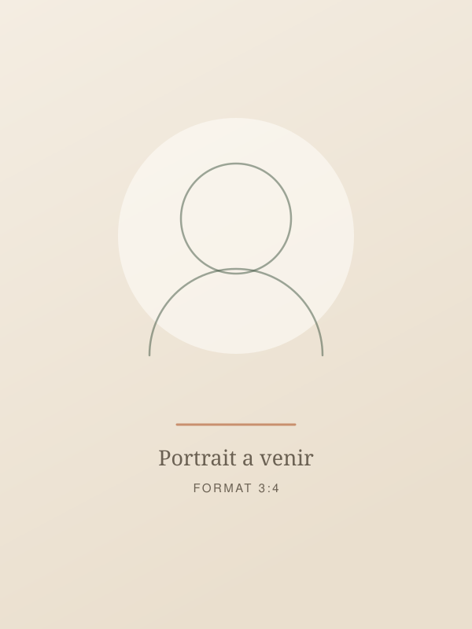

Léa Cazaux, naturopathe
Installée à Juillan depuis 2018. Trois motifs de consultation, des séances longues, et le refus assumé de sortir de mon rôle.
J'ai travaillé dix ans dans un service administratif, avec les horaires et la fatigue qui vont avec. C'est en cherchant à comprendre ma propre digestion, après des années à supprimer des aliments au hasard, que je me suis formée sérieusement.
Ce détour explique ma façon de travailler : je me méfie des protocoles ambitieux qu'on abandonne au bout de dix jours, et je préfère trois changements tenus à vingt conseils oubliés.

Portrait à réaliser avant la mise en ligne réelle.
Formation
- Formation de naturopathie, 1 200 heures
- Formation complémentaire : microbiote et troubles digestifs fonctionnels
- Formation complémentaire : accompagnement du cycle et de la périménopause
- Formation continue, deux sessions par an
Données de démonstration : école, années et intitulés exacts à compléter avec la praticienne réelle.
Mon cadre de travail
- Je ne pose aucun diagnostic et je ne prescris rien.
- Je ne demande jamais de modifier ou d'arrêter un traitement.
- Je ne vends aucun produit et n'ai d'accord avec aucune marque.
- Je vous oriente vers un médecin, un diététicien ou un psychologue dès que la situation le demande.
- Je vous dis dès le premier appel si je ne suis pas la bonne personne.
Elle m'a dit dès le premier appel que mon problème relevait d'abord de mon médecin. J'y suis retournée, puis on a travaillé ensemble sur le reste. C'est ce qui m'a mise en confiance.
Pourquoi trois motifs seulement
Un cabinet qui affiche quinze spécialités n'en maîtrise aucune. J'ai choisi la digestion, la fatigue et le cycle féminin parce que ce sont les situations que je vois le plus souvent, celles sur lesquelles je me forme, et celles où l'hygiène de vie pèse réellement.
Pour tout le reste, je préfère vous adresser à quelqu'un dont c'est le métier. Vous perdrez moins de temps, et moi je garde une pratique dans laquelle je sais ce que je fais.
Ce que la naturopathie ne fait pas. La naturopathie n'est pas une profession de santé réglementée en France. Je ne remplace ni votre médecin traitant, ni un spécialiste, ni un professionnel de santé mentale, et je travaille toujours en complément de votre suivi.